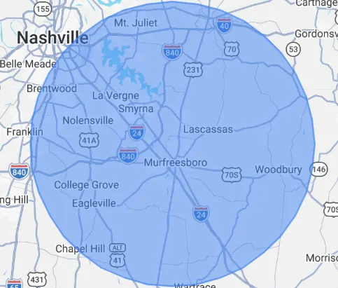

Angle Stop Plumbing, founded by Jim Nephew, has a passion to deliver personable, professional, experienced plumbing service to the homeowners and businesses in Murfreesboro, TN and the surrounding areas that make up Middle Tennessee proper. We consider every conversation a blessing from our Lord & Savior Jesus Christ. It is Angle Stop Plumbing's' desire to serve you in a way that is pleasing to our Lord & Savior utilizing the skills he has blessed us with to assist in your plumbing needs.
While serving in the US Navy, our founder Jim Nephew learned many aspects of the plumbing industry, including the sense of urgency necessary to keep plumbing systems functioning twenty-four seven. After completing his service to our country Jim spent several years following in the construction industry learning everything from residential, commercial and industrial applications.
As a plumber Jim found himself spending a lot of time completing plumbing projects for new homes, or extensive residential remodels. On other occasions, Jim could be found working commercial projects that involved multiple family dwellings such as apartments, hotels and office complexes. From time to time, Jim would be working in some of the most sensitive facilities across our country such as natural gas compressor stations, power plant facilities and much more.
With such a diverse portfolio of experience Angle Stop Plumbing is well prepared to serve your plumbing needs. Experiencing a burst or broken water line, or worse a sewer line failure, do not fret give us a call. Or maybe you are looking to add a gas appliance, we are here to serve your needs.
No matter your plumbing need, large or small, Angle Stop Plumbing is here to guide you on a solution to achieve the desired outcome.
Why the Name Angle Stop Plumbing?
Often, we are asked why Angle Stop Plumbing, well (Angle Stop) is the name of the little valves below your sink or toilet that is used to shut off or turn on water to these fixtures. These little valves are the first line of defense to preventing water damage to your property should the fixture fail, and just like these little valves Angle Stop Plumbing is your first line of defense to return your plumbing system back to normal. Many times, folks refer to us as Angel Stop Plumbing, definitely a compliment and as I mention below God certainly has a great sense of humor. We are certainly blessed to have the opportunity to serve all our customers, venders and colleagues throughout the industry.
Jesus Created Us
As individuals we are all created equal by God the Father with unique abilities, it is God’s expectation that we utilize those unique abilities in such a way that we glorify him and his kingdom daily. If we take time to consider God’s amazing creation, this world, everything in it and everyone who occupies the earth, there are no two people alike. We may come across two individuals who are similar, but never the same. Isn’t our Lord amazing?
As a believer in the trinity, (God the Father, God the Son (Jesus Christ) and God the Holy Spirit) it is my belief God created everything. Right from the beginning of our bible (God’s Word), “Genesis 1:1 In the beginning God created the heavens and the earth.” Throughout Genesis we learn of God creating light and darkness creating what we know as day, night, evenings and mornings “Genesis 1:3-5”. If we continue further in Genesis, we learn how God created the skies, seas, land, vegetation and living creatures, what an amazing God I serve, thank you Jesus!
In “Jermiah 1:5 God informs us all, Before I formed you in the womb I knew you, before you were born I set you apart; I appointed you as a prophet to the nations.” Wow, before we were created in our biological mothers God has a plan for us, just amazing to me! God creates everything, including you and me, he knows our thoughts, actions, words and what we are inputting into our hearts and minds.
As I think about God’s creation, it goes without saying God places business ideas, thoughts into our hearts and minds. Those thoughts and ideas become a reality when we take guidance from our Lord & Savior Jesus Christ. No matter what we think our plans are while on this earth, if we do not include our Lord & Savior in those plans, our plans will never bring true meaning to our life while on this earth.
“Jeremiah 29:11 For I know the plans I have for you, plans to give you hope and a future.”
Since the inception of Angle Stop Plumbing, as I look back from the early thought of creating a plumbing company, (Thought placed by God) I make a daily effort to consider God’s will and purpose for me personally, and how Angle Stop Plumbing should serve his kingdom. I consider it a blessing every time my Lord & Savior sends Angle Stop Plumbing a new customer; it is a tremendous honor that God would trust Angle Stop Plumbing to serve families and businesses throughout Middle Tennessee.
So, as I pause to reflect, it important to Angle Stop Plumbing that we acknowledge our Lord & Savior Jesus Christ who created Angle Stop Plumbing and has blessed us with the ability to meet so many fine folks throughout Middle Tennessee. Thank you, Jesus, for what you are doing through Angle Stop Plumbing.
Jesus Saved Us
What a tremendous blessing to serve a God that loves all of us so much, who was willing to sacrifice his only son (Jesus Christ) “John 3:16” who lived a sinless life, so that if we choose (God leaves the decision up to us), his son Jesus Christ as our personal Lord & Savior, our sins will be forgiven, cleansed, and we will be washed as white as snow and set free from the burdens of sin with everlasting peace and invited into God’s eternal kingdom when the time comes that God calls us home. Wow, to know that there is no one that loves me more than my Lord & Savior, what an encouragement! Fortunately for us, Jesus Christ is the only one who can save us, “Acts 4:12 Salvation is found in no one else, for there is no other name under heaven given to mankind by which we must be saved.” Thank you, my Jesus!
What a tremendous gift, our Lord & Savior Jesus Christ does no force this on any of us, he loves us so much he wants us to have free will to choose him over the deficiencies of this world. “Ephesians 2:8-9 For it is by grace you have been saved, through faith – and this is not from yourselves, it is the gift of God – not by works, so that no one can boast.”
No matter your past, no matter your experiences, no matter your background Jesus can save you and me. “Hebrews 7:25 Therefore he is able to save completely those who come to God through him, because he always lives to intercede for them.” I am so grateful for my Lord & Savior and the continued intercession he makes for me, thank you my Jesus!
“Romans 5:7-8 Very rarely will anyone die for a righteous person, though for a good person someone might possibly dare to die. But God demonstrates his own love for us in this way: While we were sinners, Christ died for us.”
Jesus Walks with Us
After accepting God’s invitation to choose Jesus Christ as my Lord & Savior over my life a newfound peace was brought to my heart, however, it wasn’t until I invested time learning about my Lord & Savior that I noticed incredible miracles occur in my own life, including the thought of creating Angle Stop Plumbing and around our community. I have come to know, just accepting Jesus Christ as your Lord & Savior is well and good, however, that’s just the orientation, God wants us to build a true friendship with his son Jesus Christ by investing time learning about God’s ways, purposes and will for our life by studying God’s word daily. Just like any true friendship, if we invest time in the relationship we begin to learn about each other’s desires, hopes, dreams and weaknesses, when we need encouragement and more. With my relationship improving with my Lord & Savior I began to see prayers answered that I thought would never get answered, my life carrying more peace than concern, oh, and that my Jesus also has a great sense of humor.
“James 4:8 Come near to God and he will come near to you. Wash your hands, you sinners, and purify your hearts, you double-minded.” As a humble sinner I want a strong relationship with my Lord & savior so that I can easily admit my faults so that he may purify my heart to bring me peace so that I may continue to serve him, I don’t want to be found guilty of wavering in my faith (double-minded). I want to live my remaining days on this earth serving my Lord & Savior, seeking his desires for my life rather than what those around me desire for my life, I want my Jesus Christ as my best friend above anyone else. As I continue this path, I am confident my Jesus will continue to walk in all my remaining days and guide my actions, decision, thoughts and heart in such a way that I will be pleasing to him while serving those around me so that I may finish the race strong.
“John 15:15 I no longer call you servants, because a servant does not know his master’s business. Instead, I have called you friends, for everything that I learned from my Father I have made known to you.”
Jesus Has Blessed Us
Have you ever heard this statement made, “I wish I knew back then what I know now”? I found myself making this statement several years back, but then as I reflect over my life through good times and many struggles (I am a slow learner) I am grateful because my Lord & Savior has taught me many valuable lessons over my lifetime. The fact I am here to serve you today is a tremendous blessing, God kept his hedge of protection around me throughout my life, I have done a lot of knuckle head things that probably should have taken my life or caused serious injury, for that I am grateful to my Jesus. If that wasn’t enough, my Lord & Savior blessed me with an incredible wife over twenty plus years ago, and I mean blessed because she has had to demonstrate a lot of patience with my knuckle head decisions over the years, and as an added bonus God has blessed my wife and I with two amazing boys who have turned out to be amazing young men, thank you Jesus! Isn’t it amazing if we take time to slow down and reflect over our life how clearly it is that God truly loves us just by the people he places in our life, at least that is how I see it because left to my own devices I would have never met my beautiful wife. Now older, with each passing morning when I wake up, I consider it a blessing because I know God chose to wake me up, to go out and serve his purposes for his kingdom.
“Numbers 6:24-26 The Lord bless you and keep you; the Lord make his face shine on you and be gracious to you; the Lord turn his face toward you and give you peace.”
“Ephesians 1:3 Praise be to the God and Father of our Lord Jesus Christ, who has blessed us in the heavenly realms with every spiritual blessing in Christ.”
May God Bless You, Your Family & Your Business
2 Thessalonians 3:5
Angle Stop Plumbing Serves the Following Middle Tennessee Cities
- Murfreesboro, TN
- Smyrna, TN
- Christiana, TN
- La Vergne, TN
- Rockvale, TN
- Nashville, TN (South of I-40)
- Mt Juliet, TN
- Lebanon, TN
- Antioch, TN
- Bell Buckle, TN
- Franklin, TN
- Arrington, TN
- Brentwood, TN
- Nolensville, TN
- Shelbyville, TN
Angle Stop Plumbing Serves the Following Counties

- Rutherford County, TN
- Davidson County, TN
- Bedford County, TN
- Williamson County, TN
- Wilson County, TN
- Coffee County, TN